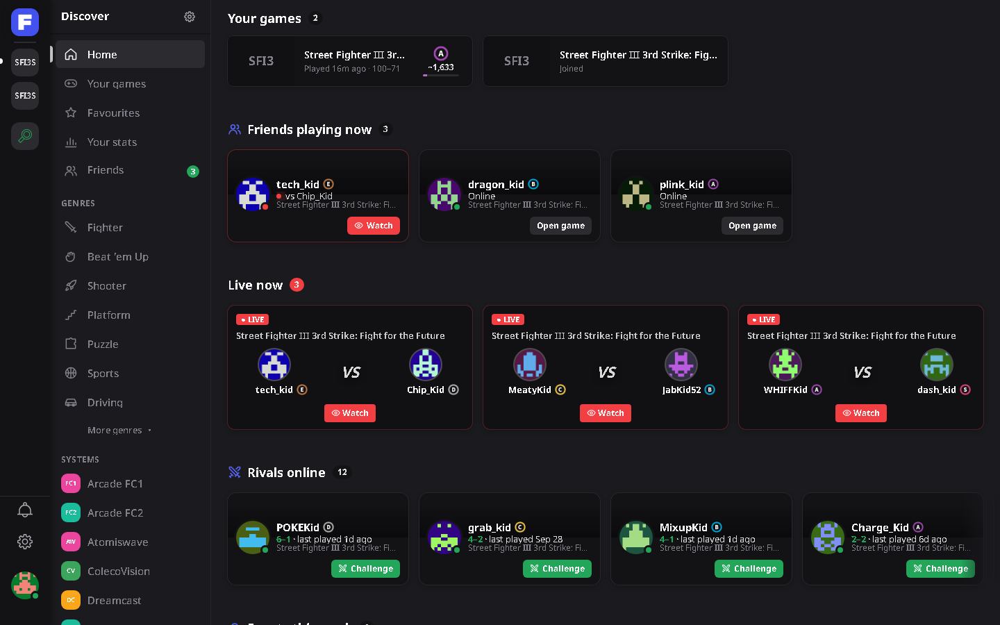
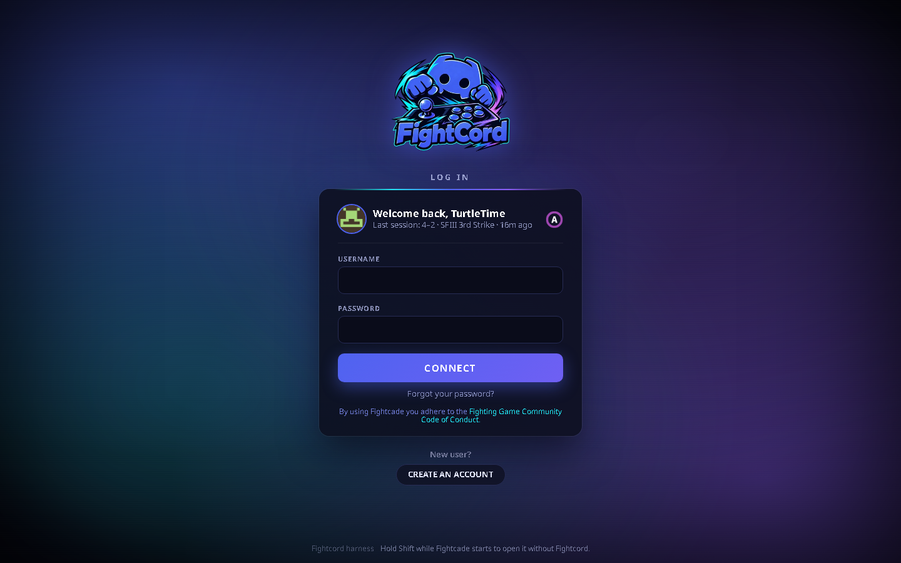

FightcordFightcord
FightcordFightcordY un montón de herramientas para jugadores competitivos: ficha del rival, estadísticas, metas de entrenamiento, buscar partida y modo streamer. Un instalador, y todo funciona dentro de la app de Fightcade en tu PC.
Hecho por fans. No está hecho por Fightcade ni por Discord, ni afiliado ni avalado por ellos.

Un tema estilo Discord con barra de canales, lista de miembros agrupada por rango, tarjetas al pasar el mouse y panel de perfil. Oscuro, AMOLED, Gris clásico o FightCord Neón, cualquier color de acento, o tus propios colores.

La pestaña de búsqueda se convierte en una página Descubrir hecha para ti: amigos jugando ahora, rivales libres, los eventos de la semana, tu rango y ELO por juego, partidas en vivo y búsqueda instantánea.

Arte de juegos pasando detrás de una tarjeta elegante, la mascota de FightCord y una bienvenida con tu rango y tu última sesión. El inicio de sesión de Fightcade, renovado.

Un botón muestra quién está libre ahora cerca de tu rango, con buen ping, nuevo para ti o parejo en el cara a cara. Haz clic en Desafiar y Fightcade pregunta el FT como siempre.

Apenas alguien te desafía: su rango, ELO, tus probabilidades, su cara a cara y si suele abandonar sets ranked.


Metas, estadísticas e historial. Metas de entrenamiento seguidas en vivo, el récord de la noche, un gráfico de rango y ELO por juego, cara a cara y análisis por rango del rival, ping y hora del día.
Ctrl+Shift+H difumina los nombres, avatares y el chat de los demás jugadores. Los desafíos esperan en una cola, una tarjeta a la vez y ninguna durante la partida.

Un marcador para agregar en OBS como fuente de Navegador: tú vs tu rival, rangos, el marcador y el récord de la noche. Servido solo desde tu propia PC.
Amigos con avisos de conexión y de partida, notas de jugadores, un feed del lobby con sorpresas y rachas, recordatorios de torneos, estado en Discord, traducción del chat, atajos :emoji: y tu propia música en el lobby.
En inglés, portugués de Brasil y español.

Fightcord solo se comunica con la propia API de Fightcade, con GitHub para las actualizaciones y con los servicios que actives (traducción del chat, estado en Discord). Tu configuración y tu historial quedan en tu PC.
Solo cambia lo que ves y donde haces clic en la app de Fightcade. Nunca toca el emulador, la memoria del juego, los controles ni el netcode, y nunca juega, desafía, acepta ni rechaza nada por su cuenta.
Las versiones nuevas se instalan solas al abrir Fightcade, verificadas con checksum: sin volver aquí, sin instalador. Desinstala cuando quieras y tu configuración anterior se puede restaurar.
Cierra Fightcade, ejecuta FightcordSetup.exe y haz clic en Instalar. Abre Fightcade y una pantalla de bienvenida corta te guía con el resto.
El instalador no tiene firma digital (los certificados cuestan dinero), así que SmartScreen avisa la primera vez: Más información → Ejecutar de todas formas.
Algunos antivirus (Malwarebytes, por ejemplo) marcan instaladores nuevos sin firma por una suposición de IA, como “MachineLearning/Anomalous”. No es una amenaza conocida. Todo es código abierto, así que puedes leer el código o compilar el instalador tú mismo; si confías en él, restáuralo de la cuarentena.
Mantén Shift mientras Fightcade inicia para abrirlo sin Fightcord, luego revisa Configuración → Diagnóstico o abre un issue en GitHub.
Fightcord lo reemplaza. El instalador mueve Cerberus a una carpeta de respaldo y trae tu configuración, historial de partidas y sonidos.